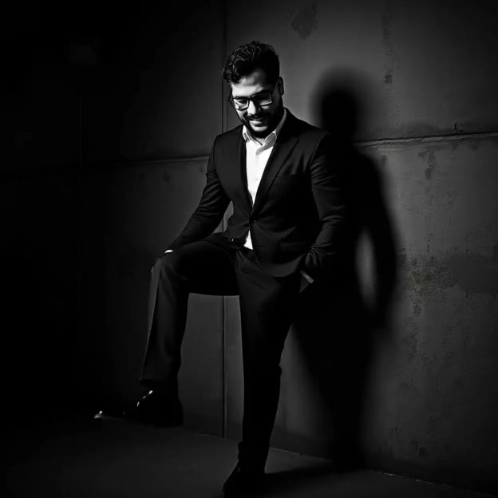

2020 — 2022
Analista de Transporte
Indústria · Santa Catarina
- Inbound e outbound, spot e tabelas
- Auditoria de custos e KPIs de transporte
LogísticaTransporteAutomaçãoDadosResultados
Especialista em Logística & Transporte
Transformo a operação de transporte em resultado mensurável: diagnóstico, ferramenta sob medida, equipe treinada e ganho comprovado no indicador — não na promessa.

Lucas L. DiogoLogística não precisa de mais um relatório. Precisa de decisão no tempo certo — com o dado na mesa, a meta definida e um dono para cada indicador. É aí que eu atuo: do chão da doca à mesa da diretoria.
Mais de seis anos em transporte, gestão de fretes e analytics em operações de grande escala — indústria, distribuição multicanal, e-commerce e varejo. Coordenei a operação de transporte de um dos maiores CDs do varejo gaúcho e hoje estruturo a inteligência de transporte de uma indústria de bioenergia com operação multiplanta.
O diferencial é juntar três papéis em uma pessoa: quem conhece a operação, quem lidera a equipe e quem constrói a ferramenta. Sem tradução entre a área e a TI, sem projeto que vira slide e morre.
Antes de falar em sistema, falo em linha de base: quanto custa hoje, quanto se perde e onde. A ferramenta existe para mover esse número — e cada módulo nasce com meta, indicador e responsável.
Mapeio processo, dados, custos e perdas. Defino a linha de base de cada indicador.
Entrega · Raio-X + baselineDesenvolvo a solução sob medida, integrada ao que já existe (XML, ERP, planilhas).
Entrega · MVP em produçãoCapacito equipe e key users e deixo a rotina de uso documentada.
Entrega · Rotina + manualIndicador com fórmula, meta e dono. Ritual semanal de acompanhamento.
Entrega · Painel + ritualComparo baseline × resultado e transformo ganho operacional em valor financeiro.
Entrega · Relatório de ganhoEscalo o que funcionou e sigo melhorando. Ganho que se repete todo mês.
Entrega · Ganho recorrenteAjuste os parâmetros. O cálculo é ilustrativo e serve para dimensionar a conversa — o número real sai do diagnóstico.
Horas valoradas a R$ 45/h. Valores de referência, sem garantia de resultado.
Cada módulo tem tela, indicadores com fórmula e entrega definida. Rodam sozinhos ou integrados — começando pelo frete, onde o dado já existe.
O frete é o maior custo logístico e quase nunca é visto por loja, categoria e veículo. O dado já existe no XML do CT-e — só não vira decisão.
Primeira versão em produção: 2–4 semanas
| Indicador | Como é calculado |
|---|---|
| % frete sobre faturamento | Σ frete dos CT-e ÷ Σ valor das NF-e |
| Custo por loja e por rota | Σ CT-e agrupado por destinatário |
| Taxa de ocupação | peso ou m³ carregado ÷ capacidade do veículo |
| R$ por kg e por caixa | frete ÷ peso bruto · frete ÷ volumes |
| Mix mercearia × perecível | frete da categoria ÷ frete total |
Cobrança acima da tabela, taxa extra, peso divergente: pequenas diferenças em milhares de CT-e viram dinheiro que sai sem ninguém ver.
Primeira versão em produção: 3–5 semanas
| Indicador | Como é calculado |
|---|---|
| Divergência (R$) | valor cobrado − valor calculado pela tabela |
| % de CT-e divergentes | CT-e com divergência ÷ CT-e auditados |
| Taxa de recuperação | valor estornado ÷ valor divergente |
| Reincidência por transportadora | divergências no período ÷ CT-e emitidos |
| Tempo de contestação | data do estorno − data da divergência |
Concorrência de frete feita em planilha, sem previsão de volume e sem checar o piso mínimo da ANTT — saving no papel, risco na prática.
Primeira versão em produção: 4–6 semanas
| Indicador | Como é calculado |
|---|---|
| Saving | (tabela atual − proposta vencedora) ÷ tabela atual |
| Aderência ao piso ANTT | proposta ≥ piso mínimo por eixo e km |
| Volume previsto | histórico + sazonalidade por rota |
| Cobertura | rotas com ≥ 2 propostas ÷ rotas em BID |
| Competitividade | desvio da proposta em relação à mediana |
A loja liga perguntando "cadê o caminhão?" e a resposta depende de telefone. Sem ETA confiável não existe gestão de exceção.
Primeira versão em produção: 4–8 semanas
| Indicador | Como é calculado |
|---|---|
| OTD — entrega no prazo | entregas no prazo ÷ entregas totais |
| Desvio de ETA | ETA previsto − chegada real |
| Tempo parado em rota | Σ paradas acima de 20 min |
| Ocorrências por transportadora | ocorrências ÷ viagens |
| Lead time origem → destino | chegada − saída |
Caminhão chega sem agendamento, espera horas e gera estadia. Ninguém sabe quanto tempo cada veículo ficou na doca — nem por quê.
Primeira versão em produção: 3–6 semanas
| Indicador | Como é calculado |
|---|---|
| Tempo de doca | fim da operação − início na doca |
| Tempo total no CD | check-out − check-in |
| Tempo de espera | início na doca − check-in |
| Ocupação de doca | minutos ocupados ÷ minutos disponíveis |
| Aderência ao agendamento | chegadas na janela ÷ agendadas |
Devolução, palete, sucata e avaria ficam parados na loja sem dono, sem prazo e sem custo apurado.
Primeira versão em produção: 3–4 semanas
| Indicador | Como é calculado |
|---|---|
| Lead time de coleta | data da coleta − data da solicitação |
| Backlog por loja | coletas abertas por loja |
| Custo da reversa | frete da reversa ÷ valor recuperado |
| Aproveitamento do retorno | viagens de volta com carga ÷ viagens |
Empilhadeira parada é doca parada. Chamado no WhatsApp, nota perdida, peça sem histórico: o custo de manutenção fica invisível.
Primeira versão em produção: 3–5 semanas
| Indicador | Como é calculado |
|---|---|
| Disponibilidade | horas disponíveis ÷ horas programadas |
| MTTR | Σ tempo de reparo ÷ nº de reparos |
| MTBF | tempo operando ÷ nº de falhas |
| Custo por máquina | Σ peças + serviços por equipamento |
| Preventiva × corretiva | horas de preventiva ÷ horas totais |
Sequência de paradas, janela de loja e ocupação do veículo.
TransporteCusto por rota, veículo e modalidade antes de contratar.
TransporteSpot × tabela × histórico em uma tela, com a decisão registrada.
TransporteProgramação diária das cargas por janela, produto e doca.
TransporteAgenda por contrato e pedido, com status vindo do SAP.
Pátio & CDIndicadores do CD em tempo real nas telas da operação.
Pátio & CDRegistro com foto, responsável, custo e prazo de tratativa.
Pátio & CDNível de serviço por cliente, rota e transportadora.
Pátio & CDHeadcount logístico calculado por volume, turno e produtividade.
GestãoViabilidade técnica e econômica para aprovar investimento.
GestãoOrigem, destino, volume e custo da malha num mapa interativo.
GestãoResultados do mês em apresentação pronta para a diretoria.
GestãoDocumentos fiscais viram base analítica sem digitação.
Dados & BIModelo semântico, DAX, dicionário de indicadores e dono por KPI.
Dados & BIDiesel, câmbio e frete todo dia no e-mail da liderança.
Dados & BIConsulta de status, abertura de chamado e alerta para o gestor.
IA & AutomaçãoRelatórios, conciliações e cargas de dados rodando sozinhos.
IA & AutomaçãoLogin, perfis, banco de dados e regras de negócio, como um app de despesas de viagem web + mobile.
IA & AutomaçãoFerramentas que já desenvolvi e uso em operação real. Elas são o ponto de partida dos módulos — por isso a primeira entrega é rápida.
Lê os XML dos CT-e e entrega custo por rota, transportadora, peso e ocupação, com tendência mensal.
Check-in, alocação de doca, cronômetro por etapa e check-out. Já rodou em CD de grande porte.
Mais de 99 mil CT-e em um mapa: origem, destino, volume e custo de cada fluxo da malha.
Distribui as cargas do dia por janela e doca, evitando pico de fila e estadia.
Newsletter automática com diesel, câmbio, commodities e notícias que mexem no frete.
Painéis operacionais em rodízio nas TVs, atualizados sem intervenção manual.
Malha, contratos, tabelas, transportadoras e nível de serviço.
OperaçãoTabela negociada × cobrado, saving, estadia e reversa.
Finanças logísticasConcorrência estruturada com piso ANTT e previsibilidade.
Compras de freteCoordenação de time, rotina, metas e treinamento de key users.
GestãoDAX, modelo semântico e governança de indicadores.
DadosLeitura de XML, integrações, rotinas e relatórios automáticos.
TecnologiaProcessos de transporte e integração com o ERP.
SistemasSistemas com login, banco de dados, perfis e assistentes.
ProdutoRaio-X do transporte com linha de base, perdas mapeadas e plano priorizado por ROI.
Diagnóstico, ferramenta, treinamento e mensuração, com ROI apurado ao final.
Plataforma hospedada, com evolução contínua, suporte e acompanhamento dos indicadores.
Não. A primeira versão roda na nuvem, com login e senha, e usa dados que a operação já tem: XML de CT-e, planilhas e exportações do ERP. A TI entra quando houver integração.
Sim — por arquivo, por API ou pelo banco, conforme a política da empresa. Como Key User SAP, conheço os pontos de integração do transporte.
Acesso por perfil, senha criptografada, registro de quem fez o quê, banco com regras de acesso por linha e coleta apenas do dado necessário para a operação.
Os dados são sempre da empresa. No projeto sob medida, a solução pode ser entregue com código e documentação; na assinatura, eu cuido da hospedagem e da evolução.
O diagnóstico leva de 2 a 3 semanas. A primeira versão de um módulo entra em produção entre 2 e 6 semanas, conforme o escopo.